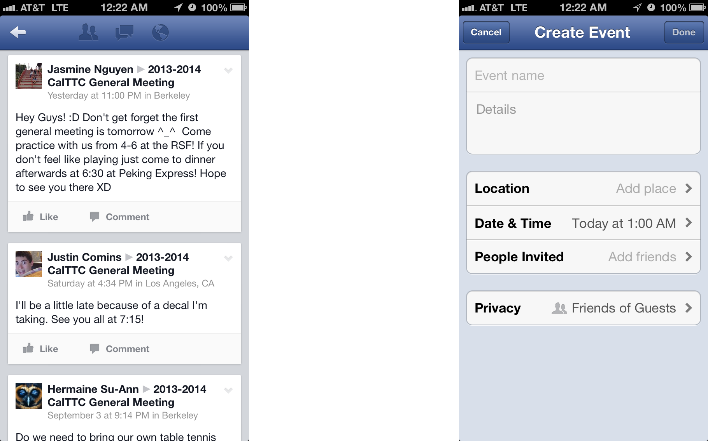
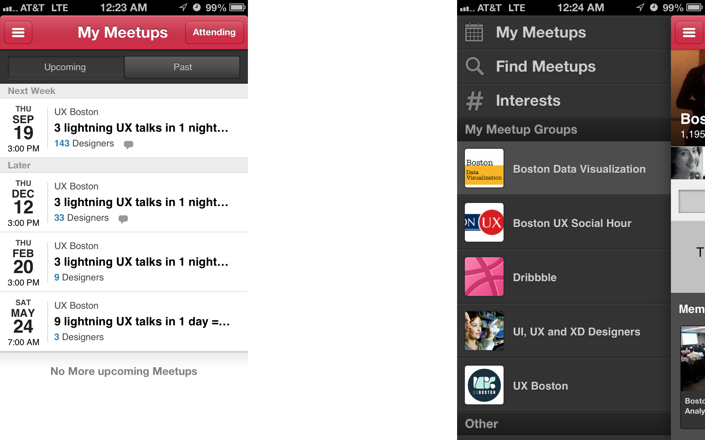
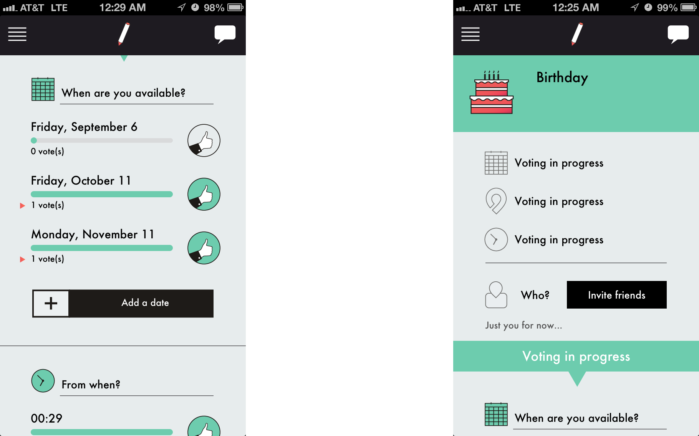

Reunion Mobile App
A mobile app that help coordinate a reunion with a small group of friendsDesign Challenge
It can be really painful to have a get-together with some longtime friends living in different places working on different occupations.
Do not know where they are currently, hard to set up the time and location, and hard to manage different groups of friends. Also hard to follow-up after a reunion.
Competitive Analysis
Facebook: pros - visual grouping, comment, privacy; cons - groups, saved places

Meetup: pros - clear list view; cons - no calendar view, no display of most recent meetup

WePopp: pros - voting for time and location; cons - bad layout

Design Principles
Powered by people
Immerse users in a reunion
Visual & interaction design: flat / card / easy / universal / and clueful
Sketch

Design Description
Navigation: hide to save space, swipe or click to show
Discover page: newsfeed and recommendations (save for future)
Me page: calendar view - schedule availability; list view - upcoming or past reunions
People page: friend - chat, location, and last message; group - view, create, and last event
Create reunion: accessible everywhere